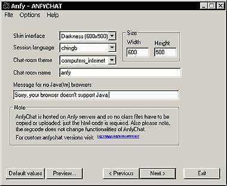

|
The AnfyChat is a client/server solution to provide an IRC-like
chat on web pages. Unlike other Anfy applets, you have not to copy
the .class files on your site, but instead place only the html parameters
to load the chat from our server. Also, this is an add-on applet,
so the regcode is not required and does not change the way the free
anfychat is running.
[For more technical
information about the available parameters, click here.]
Most parameters are self-explanatory and you can
always see brief description of each parameter by moving the mouse
pointer over the wizard.

Instructions
First off, select your choice of Skin for the
chat room interface. Note that each skin requires a unique minimum
interface size. Define the applet Width and Height
accordingly. This has to be large enough to offer comfortable chat
interface. So, it's recommended to use the size shown in each skin
name. Next, choose a Session Language name from the language
pull-down menu. Select your choice of the Chat Room Theme
and give it a unique Char Room Name. The available themes
are:
"arts_humanities", "business_economy",
"computers_internet", "education", "entertainment",
"government", "health", "news_media",
"recreation_sports", "reference", "regional",
"science", "social_science", "society_culture".
"PUBLIC" (for other topics not covered) "restricted"
(for adult sites)
Finally, you might want to set your own message for
non-Java capable browser.
Note: During chat, you can display nice icons writing
*1, *2, *3 and so on.
Here the list of icons:
http://www.anfychat.com/anfychat/icons.html
*1 = smile :)
*2 = worried :(
*3 = eye closed ;)
*4 = stand :|
*5 = happy
*6 = not happy
*7 = funny
*8 = surprised
*9 = desperate
*10 = crying
*11 = love
*12 = broken love
*13 = letter
*14 = phone
*15 = male
*16 = female
*17 = flower
*18 = gift
*19 = arrow -> blue
*20 = arrow -> yellow
*21 = arrow -> red
*22 = arrow > blue
*23 = star
*24 = clock
*25 = time
*26 = cup
*27 = hotdog
*28 = computer
*29 = house
*30 = trashcan
*31 = car
*32 = carebear
*33 = bird
*34 = fish
*35 = cow
*36 = music
*37 = Zzzz
*38 = W.C.
*39 = space
*40 = access denied
|